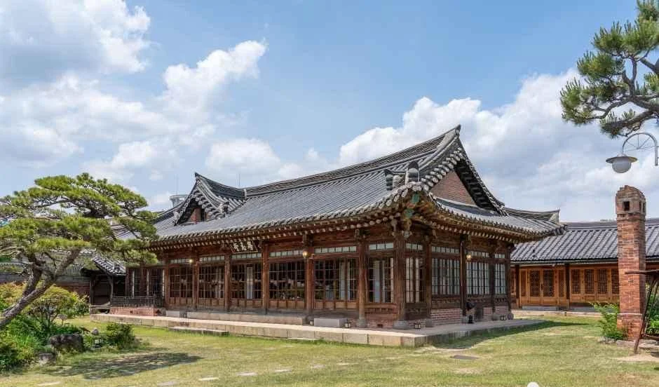
▲ 학인당 항목으로 소개된 한옥 건물 전경. 촬영 시기는 자료에 없다 ⓒ 한국관광공사 · 공공누리 제1유형
"학인당, 전주한옥마을에서 제일 오래된 고택이라는데 그냥 들어가서 구경해도 될까?" 이 글은 2026년 10월 20일 기준으로 한국관광공사 정보와 전주향교 공식 안내를 바탕으로, 교동 고택 학인당을 어떻게 이용하는지와 향교길 일대 조용한 한옥 산책 코스를 정리했다. 결론부터 말하면 학인당은 한국관광공사에 숙박시설로 등록된 곳이고, 일반 관람 시간·요금은 공식 자료에서 확인하지 못했다. 대한민국 구석구석 바로가기
대신 같은 교동 일대에는 월요일만 피하면 무료로 들어갈 수 있는 곳이 있다. 학인당 앞까지 가서 문이 닫혀 있어 당황하지 않도록, 운영 요일과 주차 정보를 먼저 확인했다.
💡 먼저 결론
학인당(향교길 45)은 한국관광공사 숙박 정보 기준 체크인 15:00, 체크아웃 11:00이고 주차는 국립무형유산원 주차장을 쓰도록 안내돼 있다. 관람 시간과 요금은 확인하지 못했으므로 문의(063-284-9929)가 먼저다. 전주향교와 한옥마을역사관은 둘 다 매주 월요일이 휴관이고 입장은 무료다.
1. 학인당은 어떤 곳인가 — 관광지보다 숙박시설
한국관광공사는 학인당(인재고택)을 "전주한옥마을에서 가장 오래된 고택문화재"로 소개하고, 영빈관·사랑채·별당채 등으로 이뤄진 숙박시설로 분류한다. 주소는 전북특별자치도 전주시 완산구 향교길 45(교동)이다. 영빈관은 구한말 장인들이 궁중 건축 양식으로 지었다고 설명된다.
건립 시기는 2013년 머니투데이 보도에 1905년 착공, 1908년 완공(백미 8,000가마 공사비·4,280명 투입)으로 나온다. 같은 기사는 전문가 의견으로 일제강점기 영향을 받은 근대 한옥이라는 평가도 함께 전했다. 전주시 공식 안내(전주시청 학인당 소개)도 1908년에 지어진 인재 백낙중의 집으로 적고, 공사에는 400여 명이 3년간 참여했다고 설명해 인원 수치는 자료마다 다르다. 착공 연도와 투입 인원은 언론 보도 수치로 보고 참고만 하자.
| 항목 | 내용 |
|---|---|
| 주소 | 전북특별자치도 전주시 완산구 향교길 45(교동) |
| 문의 | 063-284-9929 |
| 체크인·체크아웃 | 15:00 / 11:00 |
| 객실 구성 | 영빈관, 사랑채, 별당채 3개 공간(한국관광공사 소개문) |
| 부대시설 | 헤리티지 라운지, 연회장, 웨딩홀 |
| 주차 | 가능(국립무형유산원 주차장 이용) |
| 일반 관람 시간·요금 | 확인하지 못함 |
학인당 건물의 겉모습은 어떨까. Wikimedia Commons에는 2012년 9월 21일 Korea.net 글로벌기자단 전주 연수 때 찍은 한옥 사진이 있는데, 현판에 "學忍堂"으로 읽히는 글자가 보인다. 다만 Commons 설명에는 장소 이름이 적혀 있지 않아 이 사진이 지금의 학인당과 같은 건물이라고 단정할 수는 없다. 현재 외관은 방문 전에 공식 안내로 확인하자.
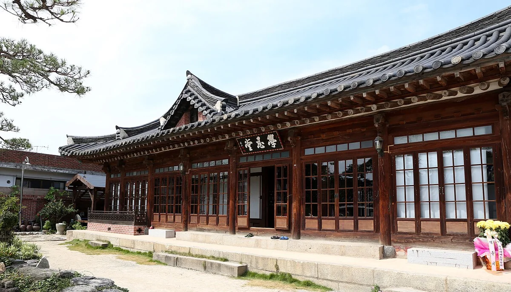
▲ 현판에 한자 "學忍堂"으로 읽히는 글자가 걸린 한옥 정면. 촬영일은 2012-09-21(Commons 정보)이며 장소 이름은 설명에 없다. 하단 로고는 잘라 냈다. ⓒ Korea.net(문화체육관광부 해외문화홍보원), Wikimedia Commons (CC BY-SA 2.0)
2. 숙박이라면 — 객실 요금은 이렇게 올라 있다
한국관광 품질인증 페이지에 등록된 요금은 객실별로 크게 다르다. 아래는 그 페이지의 비수기 기준 값이고, 등록 시점의 가격이라 현재 요금과 다를 수 있다. 예약 전에 반드시 학인당에 확인하자. 한국관광 품질인증 학인당 페이지 바로가기
| 객실 | 크기 | 기준/최대 인원 | 비수기 주중 / 주말(원) |
|---|---|---|---|
| 별당1 | 4평(21㎡) | 2/3명 | 187,000 / 242,000 |
| 별당2 | 3평(14㎡) | 2/2명 | 176,000 / 198,000 |
| 별당3 | 8평(28㎡) | 4/4명 | 220,000 / 297,000 |
| 사랑채 | 면적 확인 필요(등록값 4평·45㎡ 불일치) | 4/6명 | 363,000 / 440,000 |
| 영빈관 | 45평(150㎡) | 6/8명 | 1,000,000 / 1,100,000 |
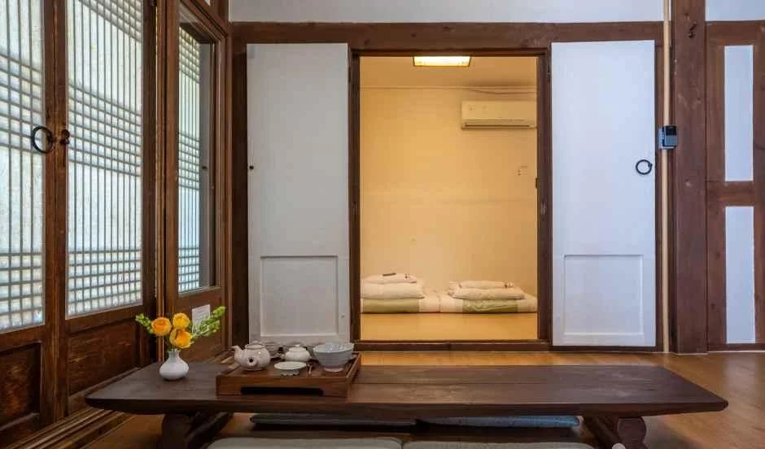
▲ 한옥 객실 내부. 학인당 항목에 올라온 사진이며 어느 객실인지는 자료에 없다. ⓒ 한국관광공사 · 공공누리 제1유형
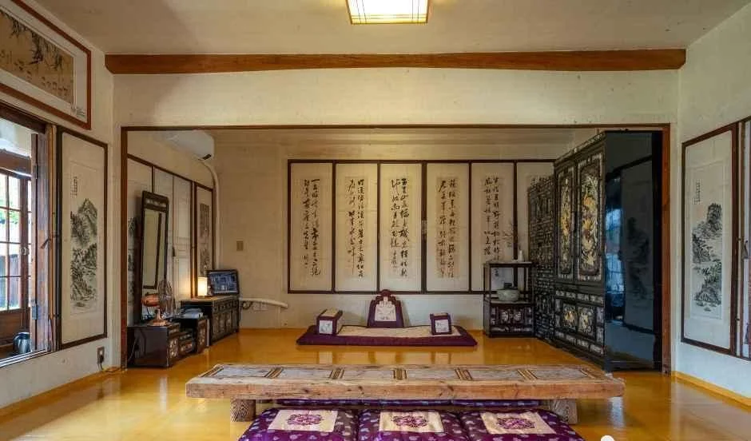
▲ 병풍과 족자가 놓인 넓은 온돌방. 학인당 항목 사진으로, 객실 이름은 자료에 없다. ⓒ 한국관광공사 · 공공누리 제1유형
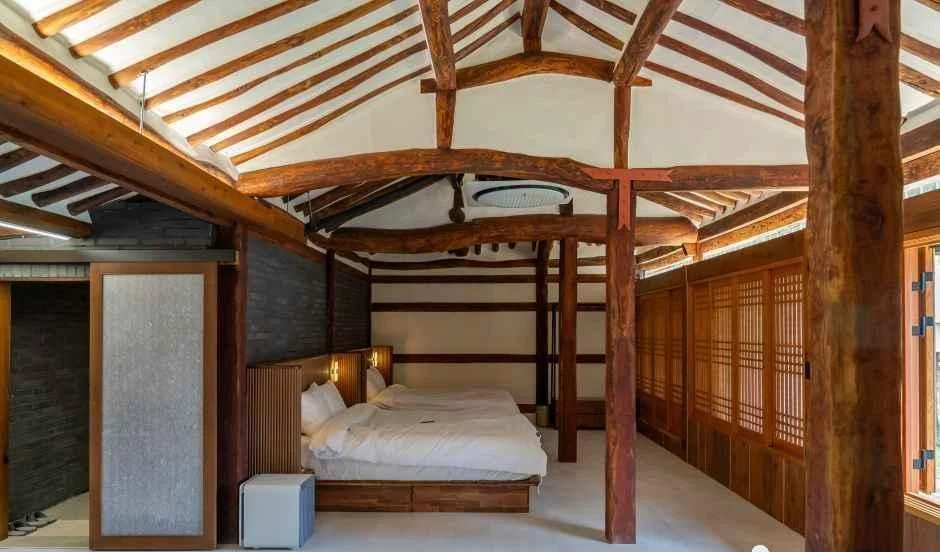
▲ 서까래가 드러난 한옥 객실 내부. 학인당 항목 사진으로, 객실 이름은 자료에 없다. ⓒ 한국관광공사 · 공공누리 제1유형
사랑채는 위 페이지에 "4평(45㎡)"으로 올라 있는데, 4평은 약 13㎡이고 45㎡는 약 13.6평이라 두 값이 맞지 않는다. 어느 쪽이 맞는지 확인하지 못해 표에서는 면적을 '확인 필요'로 적었으니 예약 시 학인당에 문의하자.
3. 알려진 이야기 — 촬영지, 그리고 지정 현황은 확인 못함
전북일보는 2024년 12월 28일 기사에서 학인당이 tvN 드라마 '미스터 션샤인'과 '정년이'의 촬영 장소였고, 단청문양체험 같은 일반인 프로그램도 운영한다고 전했다. 프로그램의 현재 운영 여부와 요금은 확인하지 못했다.
전주시 공식 소개는 학인당 본채를 "전라북도민속자료 제8호"로 안내한다. 본채는 천장을 2층 높이로 만들고 문을 접어 올릴 수 있게 설계해 전주 최초의 실내 공연장으로 쓰였고, 백범 김구가 두 차례 머문 방은 '백범지실'로 불린다. 2013년 머니투데이 보도는 숙박 손님에게만 문을 연다고 썼지만 오래된 기사라 지금의 관람 방식으로 단정할 수 없다. 국가유산포털의 현재 분류와 일반 관람 여부는 확인하지 못했으니 전주시나 학인당에 문의하자.
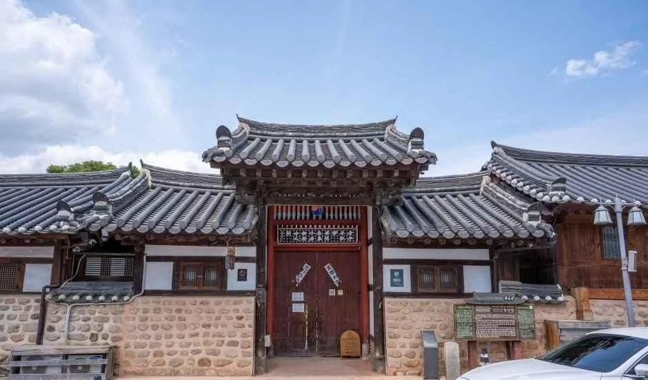
▲ 고택 대문 쪽 모습. 학인당 항목 사진으로, 오른쪽 아래에 차량 일부가 보인다. 촬영 시기는 자료에 없다. ⓒ 한국관광공사 · 공공누리 제1유형
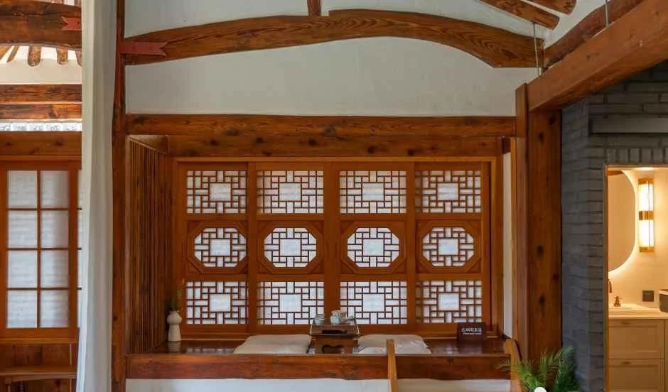
▲ 꽃살 창호가 있는 한옥 실내. 학인당 항목에 올라온 사진이다. ⓒ 한국관광공사 · 공공누리 제1유형
4. 향교길 뒷골목 산책 — 월요일만 피하면 무료
학인당과 같은 향교길에 있는 전주향교는 한국관광공사 정보로 향교길 139(교동)에 있다. 두 주소의 번지만으로 거리는 알 수 없고, 도보 시간은 공식 수치가 없어 적지 않는다. 향교는 고려·조선시대 지방 국립 교육기관으로, 한국관광공사는 대성전 앞뜰의 400년 넘은 은행나무와 돌담을 소개한다. 전주향교 공식 홈페이지 바로가기
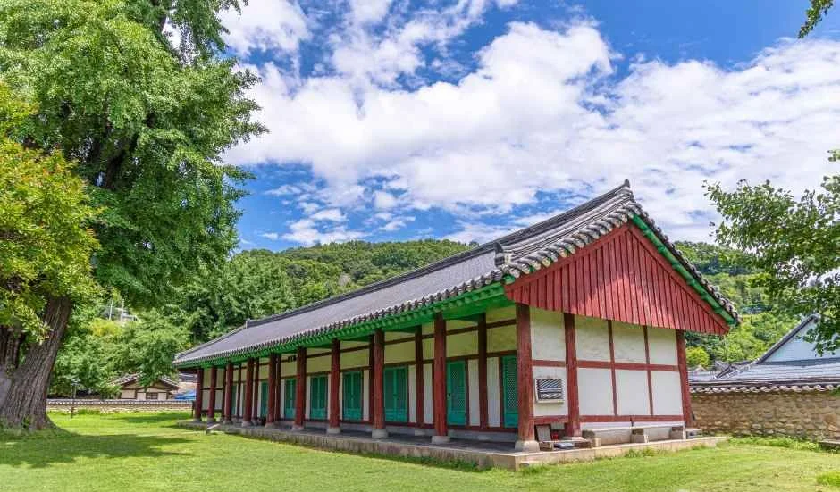
▲ 전주향교 경내 전각. 한국관광공사 사진이며 촬영 시기는 자료에 없다. ⓒ 한국관광공사 · 공공누리 제1유형
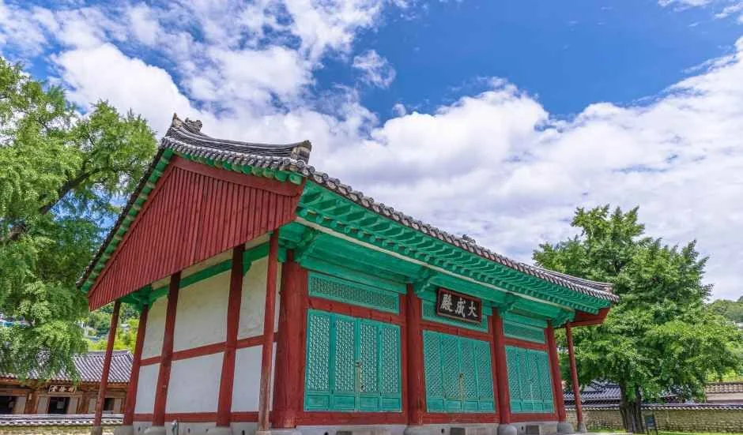
▲ 전주향교의 단청 전각. 한국관광공사 사진이다. ⓒ 한국관광공사 · 공공누리 제1유형
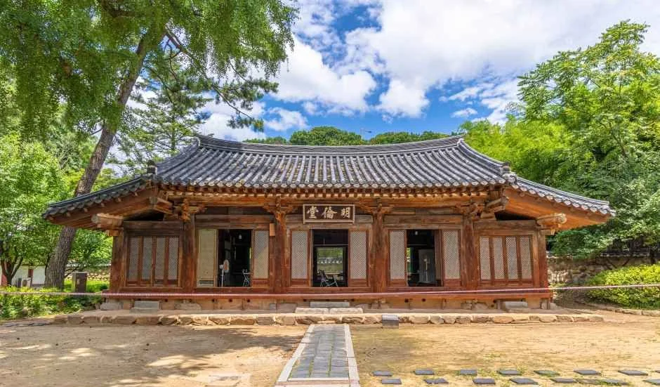
▲ 전주향교 경내의 목조 전각. 한국관광공사 사진이며 건물 이름은 자료에서 확인하지 못했다. ⓒ 한국관광공사 · 공공누리 제1유형
향교 경내에서는 현판 글자가 선명한 전각도 확인된다. 대성전과 일월문은 Commons에 2024년 7월 27일 촬영본이 올라와 있다. 이 사진들은 푸른 잎이 우거진 시기의 모습이며, 단풍철이나 겨울 모습은 아니다.
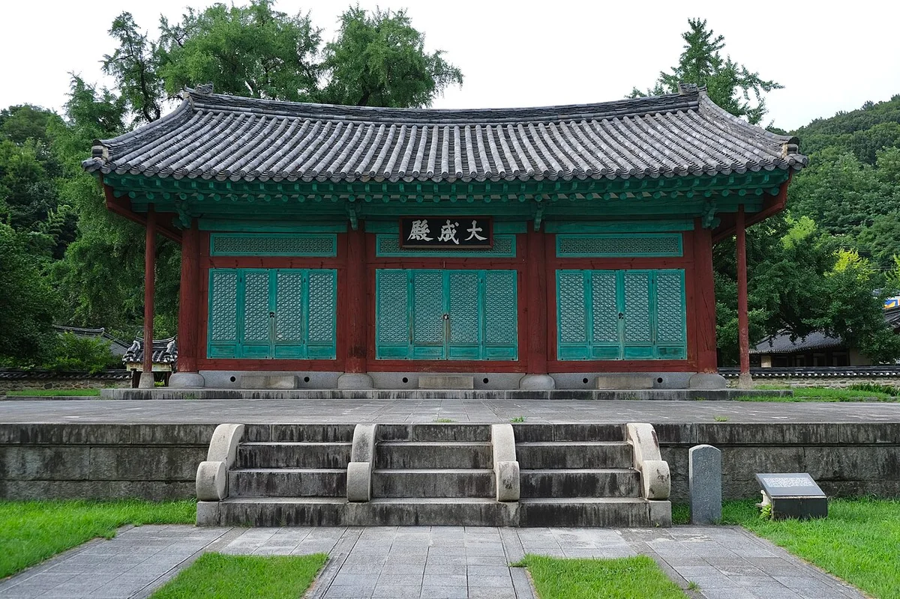
▲ 현판에 "大成殿"이 보이는 전주향교 대성전 정면. 촬영일은 2024-07-27(Commons 정보). ⓒ Motoko C. K., Wikimedia Commons (CC BY 4.0)
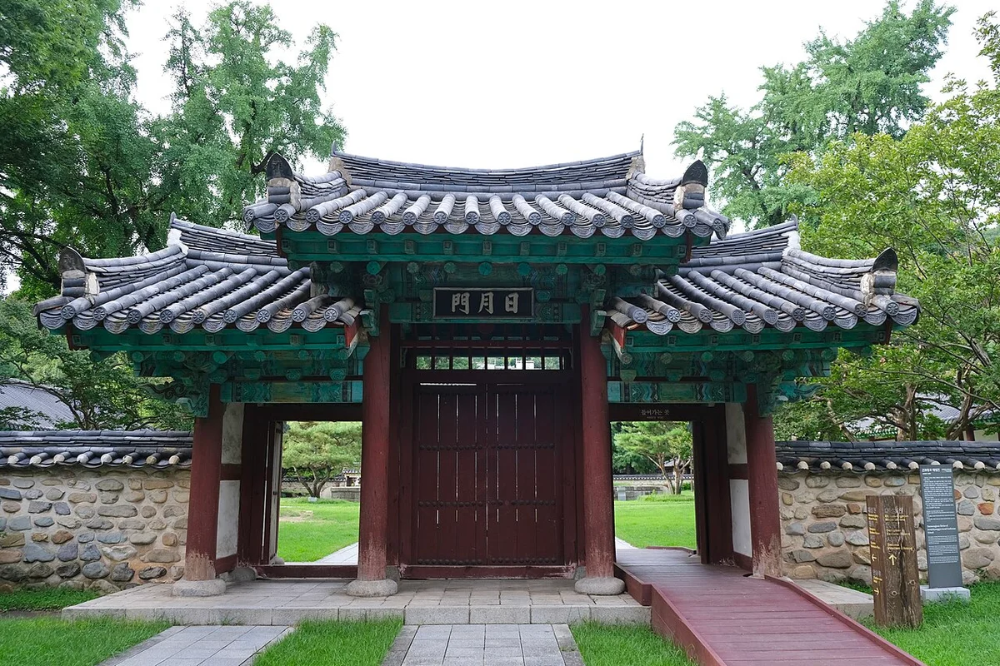
▲ 현판에 "日月門"이 보이는 전주향교 일월문. 촬영일은 2024-07-27(Commons 정보). ⓒ Motoko C. K., Wikimedia Commons (CC BY 4.0)
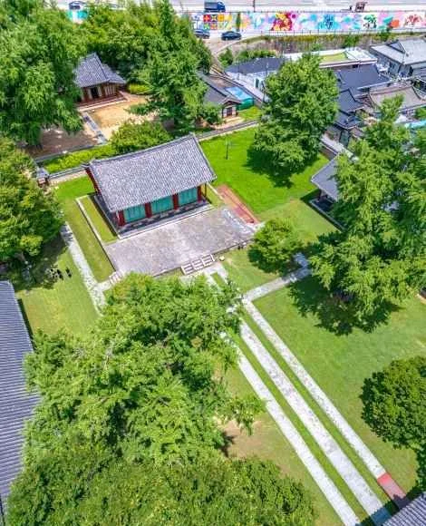
▲ 향교 주변 한옥 지붕과 잔디 마당이 보이는 항공 사진. 한국관광공사 전주향교 항목이며 촬영 시기는 자료에 없다. ⓒ 한국관광공사 · 공공누리 제1유형
한옥마을 안쪽 최명희길에 있는 전주한옥마을역사관은 2018년 개관한 곳으로, 한옥마을의 변천을 연표와 영상으로 보여 준다. 한국관광공사 정보로 이용요금은 무료다. 전주 문화관광 바로가기
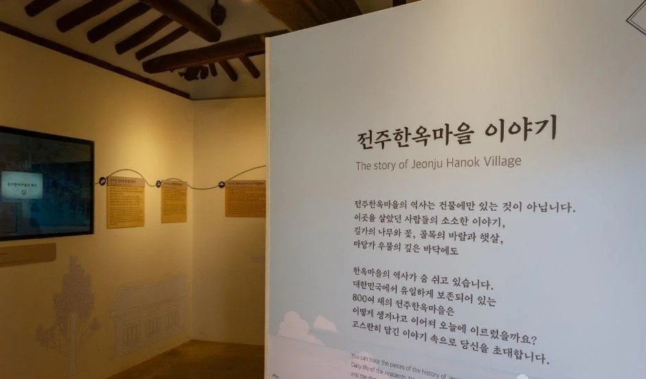
▲ 한옥마을역사관 전시실의 안내판. 한국관광공사 사진이다. ⓒ 한국관광공사 · 공공누리 제1유형
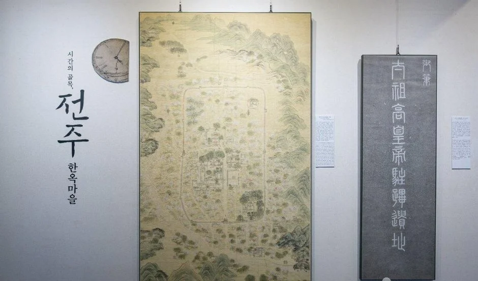
▲ 한옥마을역사관의 전시물. 한국관광공사 사진이다. ⓒ 한국관광공사 · 공공누리 제1유형
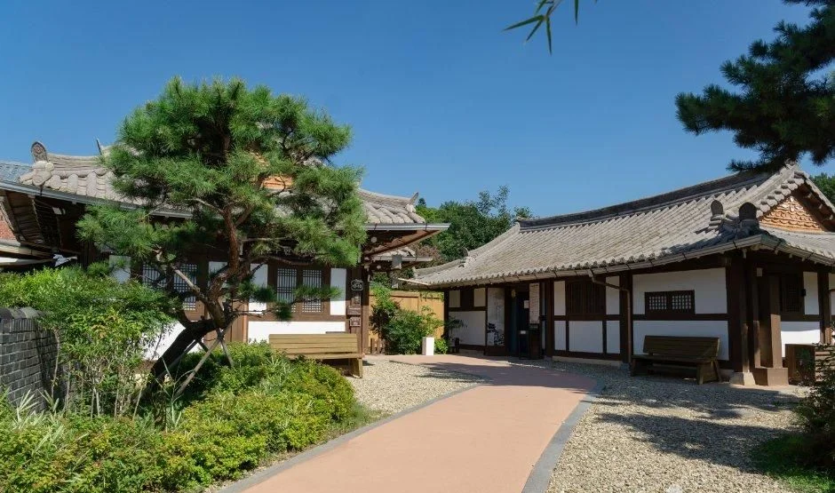
▲ 한옥마을역사관 외부로 소개된 한옥 마당. 한국관광공사 사진이며 촬영 시기는 자료에 없다. ⓒ 한국관광공사 · 공공누리 제1유형
역사관을 나와 골목으로 들어서면 벽돌 담과 좁은 돌길이 이어지는 모습이 한옥마을의 흔한 풍경이다. 아래 사진은 Commons의 2024년 7월 27일 촬영본으로, 전주한옥마을 골목의 벽돌 담과 한옥 지붕이 담겼다. 정확한 골목 이름은 설명에 없어 향교길이라고 단정하지 않는다.
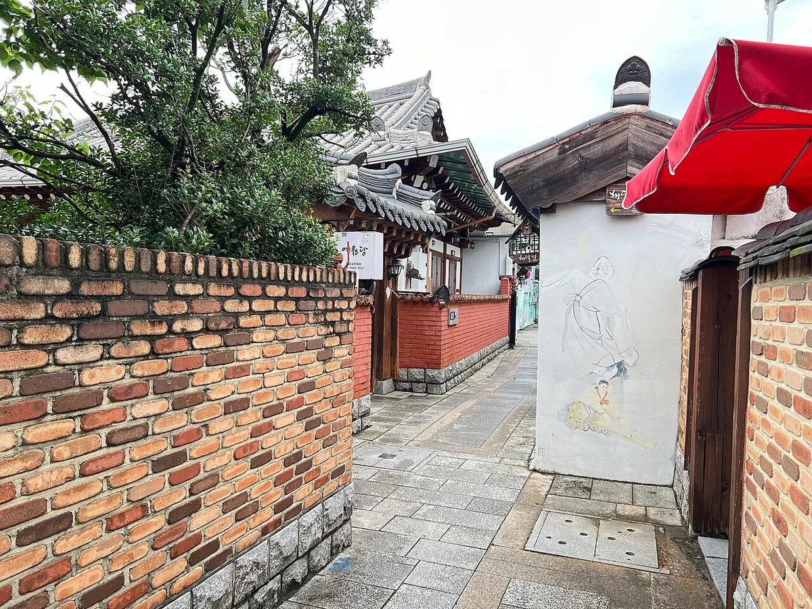
▲ 벽돌 담을 따라 이어지는 한옥마을 골목. 촬영일은 2024-07-27(Commons 정보)이며 정확한 골목은 자료에 없다. ⓒ Jjw, Wikimedia Commons (CC BY 4.0)
경기전·전동성당 쪽 큰길 동선은 전주 국가유산야행 기사에서 다뤘으므로, 이 글에서는 겹치지 않게 그 바깥 골목만 짚는다.
5. 입장·운영 한눈에 — 공식 정보 기준
| 장소 | 운영시간 | 휴관 | 요금·주차 | 문의 |
|---|---|---|---|---|
| 학인당 | 체크인 15:00·체크아웃 11:00(숙박). 관람 시간은 확인하지 못함 | 확인하지 못함 | 주차는 국립무형유산원 주차장 | 063-284-9929 |
| 전주향교 | 하절기 09:00~18:00, 동절기 10:00~17:00 | 매주 월요일(월요일이 공휴일이면 다음 날) | 무료, 주차 가능(한국관광공사). 주차 요금은 확인하지 못함 | 063-288-4548 |
| 한옥마을역사관 | 10:00~18:00(입장 마감 17:45) | 매주 월요일 | 무료. 주차 정보는 확인하지 못함 | 063-286-5125 |
| 오목대 | 상시 개방 | 연중무휴 | 확인하지 못함 | 063-281-2114 |
전주향교 홈페이지는 하절기를 3~10월, 동절기를 11~2월로 안내한다. 이 글을 쓴 10월 20일은 하절기라 18시까지지만, 11월 1일부터는 17시에 닫는다. 역사관 정보는 한국관광 정보 사이트(최종수정 2026-09-21), 오목대 정보는 한국관광공사 TourAPI 기준이다.
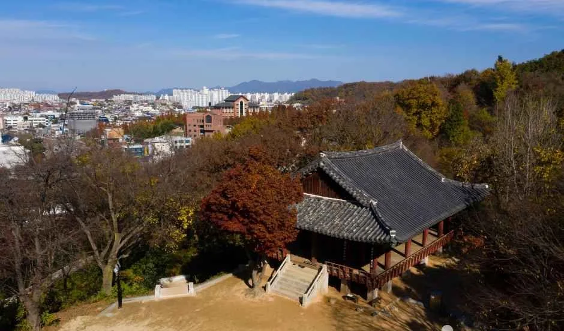
▲ 오목대 일대의 정자 지붕과 단풍이 든 숲. 한국관광공사 사진이다. ⓒ 한국관광공사 · 공공누리 제1유형
가을과 겨울 풍경은 어떨까. 한국관광공사 오목대 항목에는 숲이 노랗게 물든 언덕을 시가지 위로 내려다본 항공 사진과, 정자 안쪽에서 단풍 든 숲이 보이는 사진이 올라와 있다. 촬영 시기는 자료에 없지만 잎의 색은 사진으로 확인된다. 겨울에는 Commons에 2014년 12월 20일 촬영본으로 올라온 한옥마을 지붕 사진이 참고가 되는데, 지붕 곳곳에 눈이 쌓여 있다. 이 날의 적설이 지금 겨울에도 같다는 뜻은 아니므로 방문 전 날씨를 확인하자.
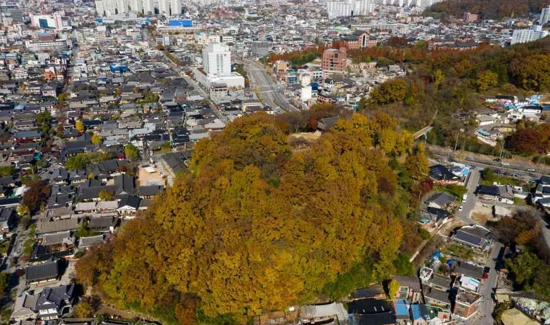
▲ 노랗게 물든 숲이 있는 언덕과 주변 시가지를 내려다본 사진. 한국관광공사 오목대 항목이며 촬영 시기는 자료에 없다. ⓒ 한국관광공사 · 공공누리 제1유형
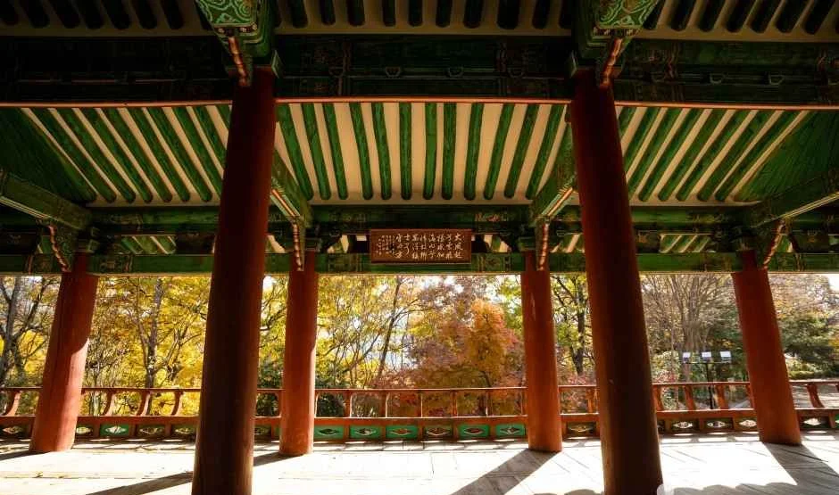
▲ 정자 안에서 바깥의 단풍 든 숲을 바라본 장면. 한국관광공사 오목대 항목이며 촬영 시기는 자료에 없다. ⓒ 한국관광공사 · 공공누리 제1유형
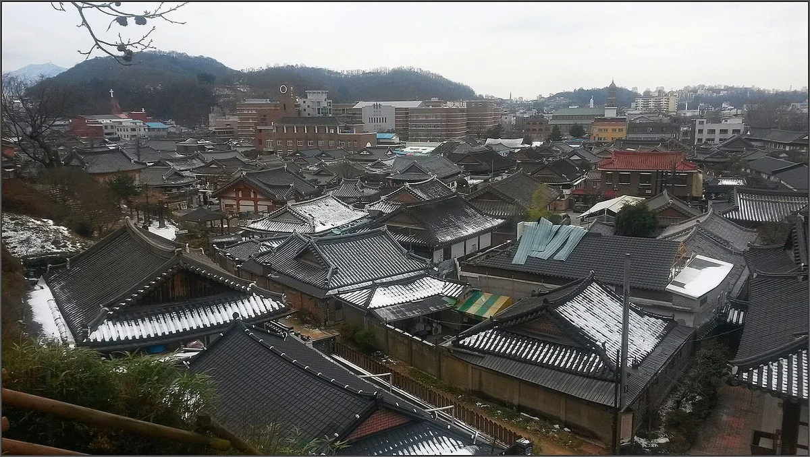
▲ 지붕 곳곳에 눈이 쌓인 한옥마을 전경. 촬영일은 2014-12-20(Commons 정보)이며 촬영 지점은 설명에 없다. ⓒ pictures Jettcom, Wikimedia Commons (CC BY 3.0)
6. 주차 — 학인당은 무형유산원, 나머지는 기존 기사로
학인당 숙박 정보에는 주차가 국립무형유산원 주차장을 이용하는 것으로 나온다. 무형유산원 주차장은 서학로 95에 있고, 서편 24시간, 동편 07:00~21:00, 지하 09:30~17:30으로 구역별 시간이 다르다는 점은 전주한옥마을 무료주차장 기사에 정리돼 있다. 학인당에서 이 주차장까지의 거리와 도보 시간은 공식 수치를 확인하지 못했다.
차를 한 번 세우고 걸을 계획이라면 한옥마을 주차장 전체를 비교한 위 기사를 먼저 보는 편이 낫다. 같은 도시의 가을 행사 주차는 전주 비빔밥축제 덕진공원 기사를, 고택 숙박 개념이 궁금하면 보은 선병국 가옥 기사를 함께 보자.
7. 반나절 순서 예시
| 순서 | 할 일 | 체크 |
|---|---|---|
| 1 | 무형유산원 주차장에 차 세우기 | 구역별 운영시간 확인 |
| 2 | 학인당 앞 골목 걷기(외관만) | 관람 가능 여부는 사전 문의 |
| 3 | 전주향교 | 월요일 휴관, 11월부터 17시 마감 |
| 4 | 한옥마을역사관 | 월요일 휴관, 17:45 입장 마감 |
| 5 | 오목대 | 상시 개방 |
✅ 출발 전 체크
1) 학인당은 숙박시설 기준 정보이므로 방문 전 063-284-9929 확인 2) 향교·역사관은 월요일 휴관 3) 11월부터 향교는 17:00 마감 4) 학인당 관람 요금과 국가유산포털상 현재 분류는 이 기사에서 확인하지 못한 항목이다.
8. 정리
학인당은 한국관광공사 기준 체크인 15:00·체크아웃 11:00의 숙박시설이고, 주차는 국립무형유산원 주차장을 쓴다. 일반 관람 가능 여부는 확인하지 못했다. 같은 일대의 전주향교와 한옥마을역사관은 무료이며 둘 다 월요일에 쉰다.
학인당 관람 시간·요금, 국가유산포털상 현재 분류(전주시는 전라북도민속자료 제8호로 안내), 향교·역사관 주차 요금, 구간별 도보 시간은 확인하지 못했다. 이 기사는 2026년 10월 20일 기준이므로 방문 전 각 문의처에 확인하자.